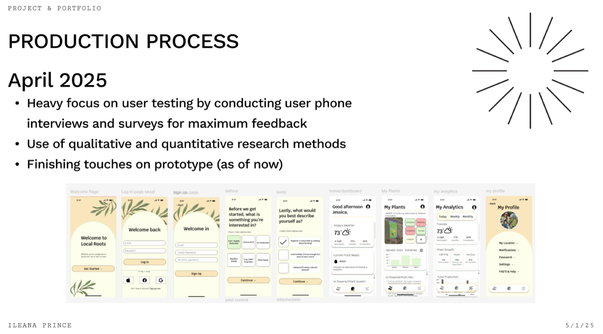

Local Roots: an AI-assisted app for sustainable farming
Beginner growers and large-scale farmers were juggling several apps to do one job. Local Roots pulls forecasting, plant care, and predictive analytics into a single screen — and earns the right to be there through research, not assumption.

The problem
I set out to design something in the sustainability space — researching green building, carbon credits, and waste conversion before landing on the piece I could actually affect: helping individual growers restore forestation, reduce waste, and protect biodiversity on the land they already work.
Looking at the apps already on the market made the gap obvious. Growers were stitching together separate tools for weather, for plant care, for analytics. Nothing covered a beginner's first vegetable patch and a large-scale operation's yield forecast in the same place.
- One app, not severalForecasting, plant needs, and analytics under a single login
- Free to startA basic tier that works, with subscription features layered on top
- Legible analyticsPredictive insight, not a wall of raw data
Research
I started by writing the questions I actually needed answered, then took them into interviews and surveys:
- What form of teaching would help beginners start their farming journey?
- What challenges and needs do farmers experience, and what solutions might help?
- What features or tools would serve both tech-savvy and non-tech-savvy farmers?
I interviewed a local farmer at a farmers market and distant family in Austin, Texas who own a farm, deliberately spanning beginner through advanced. Alongside that I audited existing agriculture apps for what they offered and what they missed, and looked at which regions lean hardest on agriculture.
What came back
- Beginners want visual aids and step-by-step instruction, not documentation.
- Affordability is a shared concern from first-timers through to advanced growers.
- Both small-scale and big-picture analytics are useful — to different people.
- Predictive insight beats historical data.
- Advanced farmers are the most eager to adopt modern technology, drones included.
The literature backed up who I was designing for. Most beginning farmers are middle-aged and come to it from another career, and only about 46 percent of intermediate farms post positive farm income — which is exactly why an affordable free tier mattered more than another premium dashboard.
Three growers, three jobs
Rather than average my users into one composite, I built three personas that pull in genuinely different directions — a beginner, an intermediate grower short on time, and a large-scale farmer who wants prediction. Designing for all three at once is what forced the app to stay simple.
Jessica Carter
Beginner · Houston, TX
Works a remote marketing job and recently moved. Farming is a new hobby and a way to meet people, but she has struggled to get started.
- Goal
- Grow organic vegetables for local markets, family, and friends — sustainably.
- Pain
- Seasonal planning and crop selection; needs affordable solutions.
- Behaviour
- Eager but overwhelmed by conflicting information online. Prefers visual, step-by-step guides.
Jason Mendoza
Intermediate · Manager at Home Depot
A few years into farming, splitting time between a full-time job and his crops.
- Goal
- Improve yield and efficiency; stop wasting money on unnecessary pesticide.
- Pain
- Affordable tech is hard to find, and operations eat the hours he doesn't have.
- Behaviour
- Wants automated insight and alerts — not a dataset to analyse himself.
John Singh
Advanced · Large-scale, Austin, TX
Fifty years old, supplying local grocery stores, and actively adopting modern methods.
- Goal
- AI and predictive analytics across the whole operation.
- Pain
- Needs prediction, not dashboards; worried about climate volatility hitting production.
- Behaviour
- Comfortable with technology, but still wants a friendly dashboard.
Each persona came with a written scenario — Jessica checking the forecast against her plants, Jason opting into pest alerts, John pulling predictive insight from the analytics page — and those scenarios became the navigation. Five destinations, no more: home dashboard, analytics, my farm, help, and settings.
From sketches to screens
February closed with final sketches. March was the month of turning them into high-fidelity screens and iterating on feedback from peers and professors. The onboarding carries a lot of weight: before the dashboard appears, the app asks what you're interested in — pest control, AI predictions, crop yield, plant needs — and how you'd describe yourself, from beginner to advanced. Those two questions personalise both the dashboard and the subscription offer.
Testing, and what changed
April was user testing: phone interviews and surveys with five participants aged 20 to 42, from a psychology student to a pharmacist to a data analyst. Only one had any real farming confidence, which is roughly the audience I was aiming at.
I ran eight tasks — find the profile page, describe how you'd reach the FAQ, change the harvest stats to a different plant, find this month's pumpkin production, check the chance of rain — followed by rating questions on onboarding, navigation, and the language used.
What testers liked
- Ease of navigation and the onboarding flow.
- The overall minimalist look of the app.
- Language that stayed readable even for beginners.
What they pushed back on
- A tutorial at the start, so first-time users can find where things live.
- More personalisation than a screen that just repeats “log in” and “sign up”.
- A homepage that holds its own visually against the other pages — more contrast, clearer hierarchy.
Those went straight back into the design. The login screen became a “Welcome back” with multiple sign-in options and a sign-up route at the bottom that leads to its own welcome page. The self-description step became the hook for personalised offers. May was spent on the tutorial, the subscription packages covering drone and seed-pod tech, and tightening the high-fidelity screens.
Where it landed
Three months took Local Roots from a couple of sketches to a working prototype with a seamless onboarding path, analytics a beginner can read, and a basic free plan. The paid tier was there to make the app viable as a business — an $8 monthly option with rewards, no ads, and the premium analytics — sitting alongside the free plan rather than replacing it.
I still consider it unfinished in the good way. The tutorial, the subscription packages, and the personalised dashboards are the threads I'm still pulling on.
Project files
Opens in Figma, in a new tab.